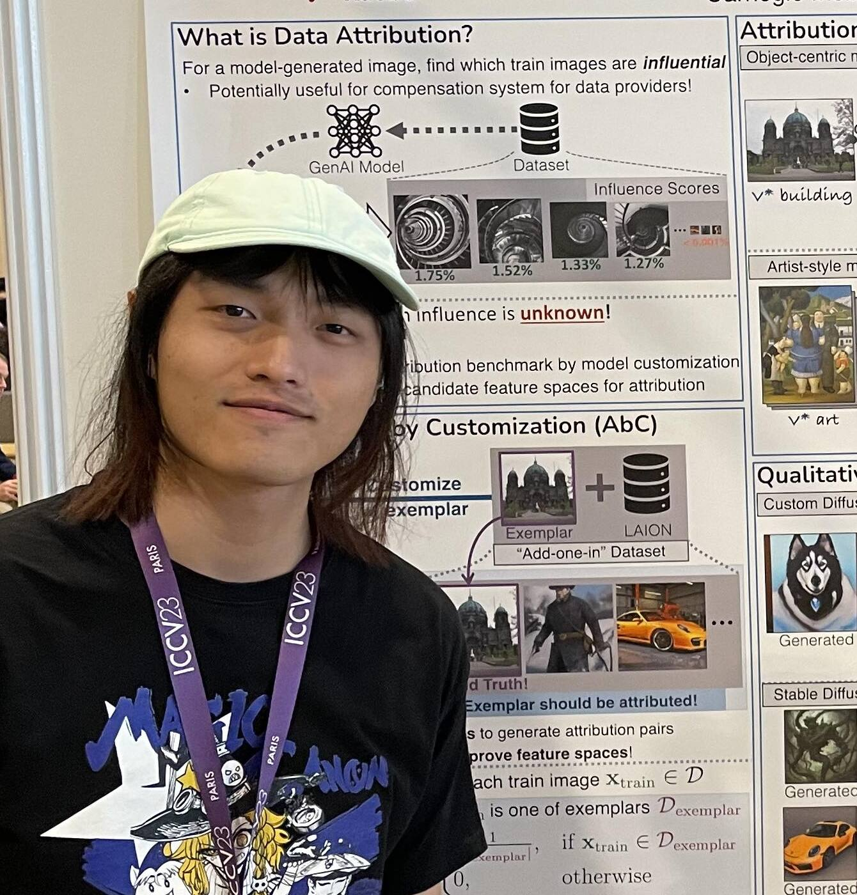
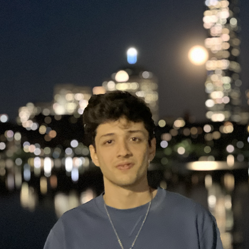
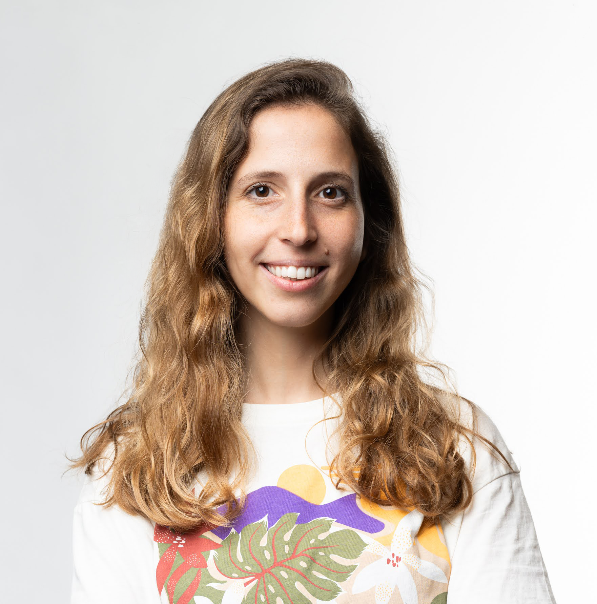

01
Topic
Data Pruning
How can we eliminate redundant or low-quality samples from large datasets without losing what matters?
A workshop on the data side of scale — pruning, distillation, synthesis, and selection — at the European Conference on Computer Vision, Malmö, Sweden, September 2026.
The ECCV 2026 Workshop on Curated Data for Efficient Learning (CDEL) seeks to advance the understanding and development of data-centric techniques that improve the efficiency of training large-scale machine learning models. As model sizes continue to grow and data requirements scale accordingly, this workshop brings attention to the increasingly critical role of data quality, selection, and synthesis in achieving high model performance with reduced computational cost.
Rather than focusing on ever-larger datasets and models, CDEL emphasizes the curation and distillation of high-value data — leveraging techniques such as dataset distillation, data pruning, synthetic data generation, and sampling optimization. These approaches aim to reduce redundancy, improve generalization, and enable learning in data-scarce regimes.
We welcome submissions on all topics related to the curation of training data — across vision, language, and multimodal learning. Submissions are handled through our OpenReview venue.
How can we eliminate redundant or low-quality samples from large datasets without losing what matters?
How can we use generative models to create or augment datasets — and when does it pay off?
How can we learn tiny datasets of highly-efficient synthetic samples that match the training signal of much larger ones?
How can we train models in areas where existing data is extremely scarce, sensitive, or hard to label?
What problems in data-centric AI can we expect in the near future as model and data scales continue to grow?
Long papers (8 pp. excl. refs) and extended abstracts (4 pp. excl. refs), on a single submission deadline. Long papers may opt into the ECCV workshop proceedings if dual-submission rules permit. Cross-submissions of work currently in review or recently accepted elsewhere are also welcome and may be presented at the workshop.
Want to volunteer as a reviewer? Sign up information will be posted here closer to the submission deadline.
Exact deadlines may shift to follow ECCV's workshop calendar. Subscribe to announcements for updates.
Subscribe to announcementsWe're inviting a roster of researchers working at the frontier of data-centric ML — from dataset distillation to synthetic data, from foundation-model training to domains where data is genuinely scarce.
Details will be announced as confirmations come in.
Researchers from MIT, Princeton, NUS, and CMU working across dataset distillation, synthetic data, and the data-centric foundations of efficient learning.






Questions? Contact George at gcaz@mit.edu.